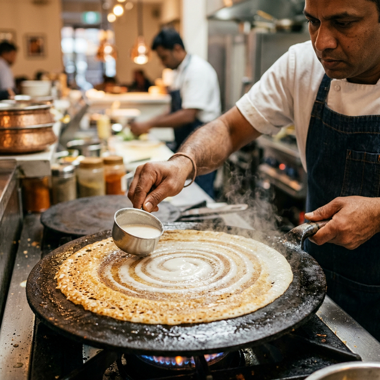

The Best Dosa Experience in Indore.
Crispy, golden, and packed with flavor. We’re taking authentic South Indian traditions and giving them a delicious modern twist.

Not Your Average Dosa
We aren’t just serving food; we’re serving creativity on a plate.
Mind-Blowing Flavors
From our explosive Cheese Volcano to the zesty Chinese Choupsey Dosa, we’ve reimagined what a dosa can be.
Something For Everyone
Our extensive menu guarantees that purists and bold adventurers alike will leave satisfied and craving more.
The Perfect Crunch
Standardized crafting methods, precise temperatures, and pure skill ensure every dosa has that perfect golden crispiness.
Crafted For You
Every dish is meticulously presented—a beautiful, Instagrammable collision of tradition and art.
A Modern Vibe
Enjoy your meal in a comfortable, contemporary setting that's perfect for families, friends, and food lovers.
Uncompromising Quality
We source the freshest local vegetables and use pure Amul Butter for that rich, unmistakable taste.
Crafted with Passion
 Pizza Dosa
Pizza Dosa
 Cheese Volcano
Cheese Volcano
 Spring Roll Dosa
Spring Roll Dosa
 Mysore Masala
Mysore Masala
 Paneer Masala
Paneer Masala
 Chocolate Dosa
Chocolate Dosa
 Uttapam
Pizza Dosa
Cheese Volcano
Spring Roll Dosa
Uttapam
Pizza Dosa
Cheese Volcano
Spring Roll Dosa
Taste the Magic.
Spring Roll Dosa
A creative fusion dosa rolled into a spring roll shape, stuffed with fresh vegetables.
₹240
The Classic Mysore Masala
For the purists. Our signature spicy red chutney spread over a perfectly roasted dosa, filled with comforting potato masala.
₹180
Cheese Volcano
An explosive cheese-filled dosa with dramatic cheese pull — our most Instagrammable dish.
₹300Rooted in Tradition. Crafted for Today.
We love a classic dosa just as much as you do. But we also love exploring where flavors can take us.
Dosa Craft was born from a simple idea: what happens when you combine the perfect, slow-fermented South Indian batter with exciting, global ingredients?
The result is a dining experience that feels both warmly familiar and completely new.
Every fold holds a surprise.
Discover Our Story
The Secret is in the Craft.
Great food doesn't happen by accident. It happens through craft.
We prepare our signature batters fresh every single morning. We pour, spread, and roast at the exact right temperatures to guarantee that perfect golden crunch every time you visit.
- Freshly fermented signature batter
- Precision roasting for perfect crispness
- Pure Amul Butter in every fold
- No shortcuts, just pure deliciousness
Whether you’re ordering a classic Sada or our boldest fusion creation, expect consistent magic.

Find Your
Nearest
Dosa Craft
Craving a crispy bite? We are located right in the heart of Indore's vibrant food scene. Drop by for a quick snack, a family dinner, or a late-night street food adventure.
Location
50, Bada Sarafa Chaupati
Indore, Madhya Pradesh
452001